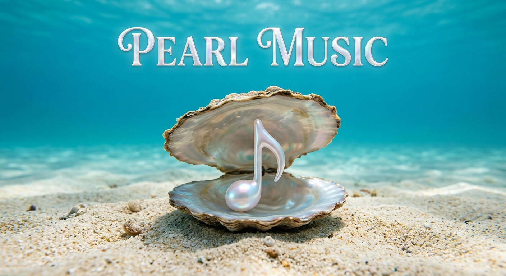

Meu primeiro post
Seja muito bem vindo neste mar de pérolas da música onde vamos te ajudar a achar a trilha sonora da sua vida.
Por: Melissa Elizabeth
0 0Venha conhecer os tesouros que a música guarda para você

Seja muito bem vindo neste mar de pérolas da música onde vamos te ajudar a achar a trilha sonora da sua vida.
Por: Melissa Elizabeth
0 0Seja muito bem vindo neste mar de pérolas da música onde vamos te ajudar a achar a trilha sonora da sua vida.
Por: Melissa Elizabeth
0 0